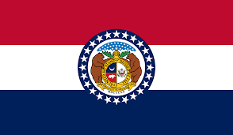
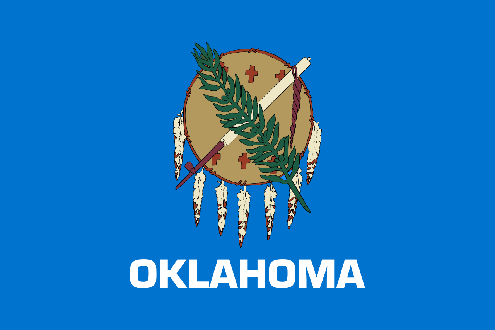

Estrategia de Internacionalización UMO 2027
Proyección UMO - Sillines de podadoras al mercado estadounidense.
Descripción del bien y/o servicio
Introducción técnica a la capacidad industrial de base, dimensionando componentes e infraestructura de exportación directa.
La empresa ofrece sillines para podadoras/lawnmowers, orientados al mercado agrícola estadounidense. Se trata de un producto que puede desarrollarse bajo diseños específicos, de acuerdo con los requerimientos del cliente. Estos productos pertenecen a la división de poliuretano inyectado, lo que representa la base tecnológica desde la cual la empresa está desarrollando esta línea de sillas. En cuanto a su composición, la estructura de la silla es nacional y está conformada por estructura metálica y estructura de madera, la tecnología de recubrimiento utilizada también es de origen nacional. Por otro lado, los componentes que actualmente provienen del exterior son los apoyabrazos y el cinturón de seguridad, los cuales son importados desde China. El producto tiene ciertas características, condiciones y exigencias técnicas que estas sillas deben cumplir en el mercado estadounidense. Para mas informacion sobre UMO consultar su sitio web oficial: https://umo.com.co
Business Model Canvas
Socios Clave (Key Partners)
Actividades Clave (Key Activities)
Recursos Clave (Key Resources)
Relaciones con Clientes (Customer Relationships)
Propuesta de Valor (Value Proposition)
Canales (Channels)
Segmentos de Clientes (Customer Segments)
Estructura de Costos (Cost Structure)
Fuentes de Ingresos (Revenue Streams)
DPI - Diagnóstico de Potencialidades de Internacionalización
El DPI (Diagnóstico de Potencialidades de Internacionalización) es un instrumento corporativo matemático focalizado. Determina objetivamente la brecha organizativa interponiendo estándares macro con la realidad micro en planta, arrojando una puntuación contundente para decidir vías de ingreso seguro al mercado.
Análisis Macro
Alta demanda focalizada en núcleos agrarios como Missouri (85,500 operaciones) y Oklahoma (69,700), integrando factores de cumplimiento con estándares SAE estables y alta competitividad fiscal reportada a nivel central.
Análisis Micro
Corporación estructurada en una robusta matriz de 57 años de trayectoria que oficia como proveedor maestro de líderes automotrices internacionales (Harley Davidson y Yamaha). En retrospectiva del factor talento, se revela un análisis profundo sobre la brecha técnica interdepartamental enfocada en el bilingüismo en el personal clave productivo.
| Dimensiones | Puntaje Obtenido | Puntaje Máximo |
|---|---|---|
| Talento Humano | 1,69% | 12,50% |
| Direccionamiento estratégico | 5,00% | 7,50% |
| Tecnología e innovación | 11,88% | 15,00% |
| Sostenibilidad | 9,42% | 15,00% |
| Potencial de internacionalización | 28,80% | 50,00% |
| Exportación e Importación (Bienes) | 7,20% | 8,00% |
| Exportación (Servicios) | 2,50% | 4,00% |
| Inversión Extranjera Directa | 2,75% | 8,00% |
| Licencias y Franquicias | 1,17% | 7,00% |
| Alianzas Estratégicas | 3,00% | 3,00% |
| Producto/Servicio | 12,19% | 20,00% |
| Puntaje total del diagnóstico | 56,80% | 100,00% |
Diagnóstico Completo
Potencial de Internacionalización
Análisis de Viabilidad de Internacionalización
Justificación del producto en el contexto internacional
Análisis del sector en el país objetivo
Tamaño del mercado y tendencias


Análisis Competitivo del Sector
Análisis DOFA de la Empresa UMO
Diagnóstico transversal que categoriza los ejes orgánicos (virtudes y fricciones) expuestos perimetralmente sobre la exigencia técnica del entorno base en Estados Unidos.
Debilidades (D)
Oportunidades (O)
Fortalezas (F)
Amenazas (A)
Sostenibilidad - UMO Dimensiones
La evaluación de factores es un bastión innegociable. Este análisis integra estructuralmente los conceptos abordados dentro del 'Podcast sobre sostenibilidad' de la plataforma, acoplándolos operativamente a la matriz de importación estadounidense.
Económico
En la dimensión económica, la empresa UMO tiene una trayectoria larga que muestra buena estabilidad... Esto demuestra que tienen una base económica sólida necesaria para competir internacionalmente y en temas de crecimiento B2B (CEPAL, 2021).
Social
En la parte social, UMO es importante porque genera muchos empleos en el sector de autopartes, una de las grandes matrices de nuestra sociedad... Sin embargo, es necesario mejorar en temas de idiomas (como el inglés) para aprovechar mejor estas oportunidades en conjunto (OIT, 2022).
Ambiental
Finalmente, en la dimensión ambiental, se identifican elementos importantes como el uso de materiales industriales que requieren control y gestión responsable. La existencia de un departamento de calidad indica que la empresa realiza mediciones... Además, su intención de ingresar a mercados como el de Estados Unidos implica el cumplimiento de normativas ambientales más exigentes, lo que promueve prácticas más sostenibles (ISO, 2015).
Análisis de la Realidad Económica
Análisis del Entorno Macroeconómico
Para evaluar la viabilidad de internacionalización de UMO en Estados Unidos, se desarrolló un análisis comparativo entre los estados de Missouri y Oklahoma, enfocado en variables macroeconómicas clave que permiten entender no solo el tamaño del mercado, sino también su estabilidad, capacidad de consumo y condiciones operativas.
La selección de los cinco indicadores se realizó con un criterio estratégico: cada uno refleja un componente esencial del entorno económico que impacta directamente la demanda y el uso de maquinaria, y por ende, la necesidad de repuestos como los sillines para podadoras. En conjunto, los indicadores permiten analizar el mercado desde diferentes ángulos: actividad económica del sector (PIB agrícola), capacidad de compra (ingreso per cápita), costos del entorno (RPP), escala productiva (land in farms) y competitividad fiscal (State Tax Competitiveness Index).
Más allá de observar datos aislados, este análisis busca identificar patrones de comportamiento económico en los últimos cinco años, permitiendo comparar la evolución y consistencia de cada estado. Esto es clave, ya que un mercado atractivo no solo debe ser grande, sino también estable y predecible en el tiempo.
Como herramienta de síntesis, se construyó el Market Viability Score, una calificación de 1 a 5 asignada a cada indicador según su impacto en la viabilidad del mercado. Esta puntuación facilita la comparación directa entre estados y permite traducir datos complejos en una lectura clara para la toma de decisiones.
En este contexto, el objetivo no es únicamente identificar cuál estado presenta mejores cifras, sino determinar cuál ofrece mejores condiciones reales para la entrada, crecimiento y sostenibilidad del producto en el mercado. Este enfoque permite concluir, con base en evidencia, cuál territorio representa una oportunidad más sólida para la estrategia de internacionalización de UMO.
GDP: Agriculture, Forestry, Fishing and Hunting
Comparative Analysis of GDP in the Agriculture, Forestry, Fishing and Hunting Sector in Missouri and Oklahoma (2021–2025)
Tabla de comparación: GDP Agriculture, Forestry, Fishing and Hunting (Millions of Dollars)
| Año | Missouri | Oklahoma |
|---|---|---|
| 2021 | 4841.1 | 2571.8 |
| 2022 | 7013.7 | 2391.2 |
| 2023 | 6582.5 | 2997.5 |
| 2024 | 6144.9 | 3094.7 |
| 2025 | 6610.6 | 3475.3 |
Market Viability Score
Missouri: 5 / 5
Oklahoma: 2.62 / 5
Strategic Analysis
Según el gráfico, El PIB del sector Agriculture, Forestry, Fishing and Hunting permite ver qué tanta actividad económica hay en sectores relacionados con el uso de maquinaria y equipos en campo. Entre 2021 y 2025, Missouri presenta valores más altos que Oklahoma, superando los 6,000 millones de dólares en varios años, mientras que Oklahoma se mantiene entre aproximadamente 2,300 y 3,400 millones. Esto muestra que Missouri tiene un sector más fuerte y con mayor movimiento. En términos de internacionalización, esto puede ser positivo porque una mayor actividad en el sector significa más uso de equipos, más necesidad de mantenimiento y más reposición, lo que aumenta las oportunidades del mercado. Por el contrario, un menor nivel de actividad puede significar menos uso de equipos y menor demanda potencial.
Sources (APA 7):
Federal Reserve Bank of St. Louis. (2025). Gross domestic product: Agriculture,
forestry, fishing and hunting in Missouri [MOAGRNGSP]. FRED. https://fred.stlouisfed.org/series/MOAGRNGSP
Federal Reserve Bank of St. Louis. (2025). Gross domestic product: Agriculture,
forestry, fishing and hunting in Oklahoma [OKAGRRGSP]. FRED. https://fred.stlouisfed.org/series/OKAGRRGSP
Per Capita Personal Income
Comparative Analysis of Per Capita Personal Income in Missouri and Oklahoma (2021–2024)
Tabla de comparación: Ingreso Personal Per Cápita (USD)
| Año | Missouri | Oklahoma |
|---|---|---|
| 2021 | 56630 | 54492 |
| 2022 | 58956 | 57943 |
| 2023 | 62484 | 60395 |
| 2024 | 64740 | 62661 |
| 2025 | — | — |
Market Viability Score
Missouri: 5 / 5
Oklahoma: 4.83 / 5
Strategic Analysis
El ingreso personal per cápita permite evaluar la
capacidad de compra en Missouri y Oklahoma. Entre 2021 y 2024, ambos estados muestran
una tendencia creciente, lo que indica mejora en los ingresos de la población. Missouri
mantiene valores ligeramente superiores, lo que sugiere mayor poder adquisitivo
promedio. Esto puede impactar positivamente el proceso de internacionalización, ya que
un mayor ingreso facilita la compra de productos como sillines para maquinaria,
reduciendo la sensibilidad al precio.
Sin embargo, la diferencia no es muy
amplia, por lo que Oklahoma sigue siendo un mercado viable, especialmente si se
considera su actividad agrícola. En conjunto, este indicador muestra que ambos estados
tienen condiciones económicas favorables, aunque Missouri presenta una leve ventaja para
productos que requieren inversión adicional por parte del consumidor.
Sources (APA 7):
Federal Reserve Bank of St. Louis. (s.f.). Per capita personal income in
Missouri [MOPCPI]. FRED. https://fred.stlouisfed.org/series/MOPCPI
Federal Reserve Bank of St. Louis. (s.f.). Per capita personal income in
Oklahoma [OKPCPI]. FRED. https://fred.stlouisfed.org/series/OKPCPI
RPP (Regional Price Parities)
Comparative Analysis of Cost Environment (RPP) in Missouri and Oklahoma (2021–2024)
Tabla de comparación: RPP – Paridades Regionales de Precios (índice)
| Año | Missouri | Oklahoma |
|---|---|---|
| 2021 | 92.012 | 92.4 |
| 2022 | 90.991 | 91.4 |
| 2023 | 91.104 | 91.4 |
| 2024 | 90.817 | 87.8 |
| 2025 | N/D | N/D |
Market Viability Score
Missouri: 5 / 5
Oklahoma: 4.83 / 5
Strategic Analysis
Según el gráfico, el indicador RPP permite comparar el
nivel de precios de cada estado frente al promedio de Estados Unidos (100). Entre 2021 y
2024, tanto Missouri como Oklahoma se mantienen por debajo de este nivel, lo que indica
que ambos estados son relativamente más económicos.
Sin embargo, Oklahoma
presenta valores ligeramente más bajos, lo que significa que es más barato. Aun así,
Missouri se encuentra apenas por encima, lo cual puede interpretarse de manera positiva.
Un nivel de precios un poco más alto suele estar asociado a una economía más dinámica,
con mayor capacidad de consumo y un mercado más desarrollado.
En términos de
internacionalización, aunque un entorno más económico puede reducir costos, un mercado
con mayor nivel de precios como Missouri puede ofrecer mejores oportunidades
comerciales, ya que refleja mayor poder adquisitivo y mayor disposición al gasto. Por
ello, esta ligera diferencia posiciona a Missouri como un mercado potencialmente más
atractivo para UMO.
Sources (APA 7):
Federal Reserve Bank of St. Louis. (s.f.). Regional price parities: All items in
Missouri [MORPPALL]. FRED. https://fred.stlouisfed.org/series/MORPPALL
Federal Reserve Bank of St. Louis. (s.f.). Regional price parities: All items in
Oklahoma City, OK [RPPALL36420]. FRED. https://fred.stlouisfed.org/series/RPPALL36420
(para el 2024 usamos el site de Bureou y para el resto de los
años el de fred)
Land in Farms
Comparative Analysis of Land in Farms in Missouri and Oklahoma (2021–2025)
Tabla de comparación: Land in Farms (millones de acres)
| Año | Missouri | Oklahoma |
|---|---|---|
| 2021 | 27.5 | 33.5 |
| 2022 | 27 | 32.9 |
| 2023 | 27.1 | 33.1 |
| 2024 | 27 | 32.9 |
| 2025 | 26.6 | 32.8 |
Market Viability Score
Missouri: 4.05 / 5
Oklahoma: 5 / 5
Strategic Analysis
El Land in farms sugiere que Oklahoma tiene una base territorial más favorable para UMO que Missouri. En la tabla, Oklahoma mantiene entre 32.80 y 33.50 millones de acres en los cinco años, mientras Missouri se mueve entre 26.60 y 27.50 millones de acres. Eso significa que Oklahoma dispone de más tierra productiva vinculada a fincas, ranchos, pastos y cultivos, es decir, más espacios donde puede existir demanda para sillines de podadoras y maquinaria de mantenimiento. Además, la serie muestra estabilidad en ambos estados, sin caídas bruscas, lo que reduce el riesgo de un mercado volátil. Para la internacionalización de UMO, esto es positivo porque Oklahoma ofrece una base agrícola más amplia y continua con mayor probabilidad de uso de equipos de mantenimiento en operaciones rurales. Missouri también es atractivo, pero su menor superficie productiva limita el potencial relativo de expansión frente a Oklahoma.
Sources (APA 7):
U.S. Department of Agriculture, National Agricultural Statistics Service. (2023).
Farms and land in farms. USDA NASS. https://esmis.nal.usda.gov/sites/default/release-files/5712m6524/bk129p580/2z10z2698/fnlo0223.pdf
U.S. Department of Agriculture, National Agricultural Statistics Service. (2024).
Farms and land in farms. USDA NASS. https://esmis.nal.usda.gov/sites/default/release-files/5712m6524/b2775h03z/ns065w04d/fnlo0224.pdf
U.S. Department of Agriculture, National Agricultural Statistics Service. (2025).
Farms and land in farms. USDA NASS. https://esmis.nal.usda.gov/sites/default/release-files/5712m6524/z316rz25j/db78w849h/fnlo0225.pdf
U.S. Department of Agriculture, National Agricultural Statistics Service. (2026).
Farms and land in farms (ISSN 1949-1557). USDA NASS. https://www.nass.usda.gov/Publications/Todays_Reports/reports/fnlo0226.pdf
U.S. Department of Agriculture, National Agricultural Statistics Service. (2026).
Farms and land in farms. USDA NASS. https://esmis.nal.usda.gov/sites/default/release-files/795776/fnlo0226.pdf
State Tax Competitiveness Index
State Tax Competitiveness Index Ranking – Missouri vs Oklahoma (2021–2025)
Tabla de comparación: State Tax Competitiveness Index (puesto en el ranking nacional)
| Año | Missouri | Oklahoma |
|---|---|---|
| 2021 | 9 | 22 |
| 2022 | 9 | 27 |
| 2023 | 9 | 21 |
| 2024 | 13 | 19 |
| 2025 | 13 | 17 |
Market Viability Score
Missouri: 5 / 5
Oklahoma: 3.82 / 5
Strategic Analysis
El State Tax Competitiveness Index muestra que Missouri
mantiene una posición más favorable que Oklahoma durante todo el periodo analizado.
Missouri se ubica entre los puestos 9 y 13, mientras que Oklahoma está entre 27 y 17.
Como en este indicador un menor valor representa un mejor entorno fiscal, Missouri
ofrece condiciones tributarias más competitivas y estables para las
empresas.
Aunque Oklahoma mejora en los últimos años, todavía queda por debajo de
Missouri. Esto puede representar mayores desafíos tributarios para una empresa que busca
entrar al mercado. En cambio, Missouri, aunque puede ser un poco más costoso en otros
aspectos, refleja un mercado más desarrollado, con mejores condiciones para operar y
crecer. Para el proceso de internacionalización, esto hace que Missouri sea una opción
más atractiva, ya que combina competitividad fiscal, estabilidad y mayor potencial
empresarial.
Sources (APA 7):
Tax Foundation. (2025). State tax competitiveness index. Tax Foundation. https://taxfoundation.org/statetaxindex/
Análisis de Entornos: Missouri vs. Oklahoma
Certeza Jurídica y Contractual (Convención de Viena - CISG)
¿Qué mide este indicador?
: Este indicador mide el nivel de protección legal que tiene una empresa al exportar. Evalúa si el estado aplica la Convención de Viena (CISG), la cual estandariza las reglas de los contratos internacionales de mercancías (calidad, entrega, pagos) para que la empresa no tenga que lidiar con leyes locales desconocidas.
Missouri: 5
Oklahoma: 4.8


Missouri
Missouri: Al ser un centro logístico masivo, la aplicación de esta norma federal da a UMO la tranquilidad de que, si un cliente reclama por calidad, el proceso se resuelve con reglas internacionales claras, evitando gastos en abogados expertos en leyes estatales específicas de Missouri.

Oklahoma
Oklahoma: El beneficio es idéntico. Permite que UMO se concentre en la parte comercial y técnica del sillín, eliminando la barrera del "miedo legal" al entrar a un mercado nuevo en EE. UU.
Per Capita Personal Income
¿Qué mide este indicador?
Mide el ahorro económico directo para el comprador final. Determina si el estado cobra o no impuesto al consumo (Sales Tax) sobre los repuestos de maquinaria agrícola. Un impuesto de 0% hace que el producto sea automáticamente más barato para el granjero.
Missouri: 5
Oklahoma: 4.1

Missouri
Missouri (RSMo 144.030): El estado exime el 100% del impuesto. Para UMO, esto se traduce en que sus sillines llegan al mostrador siendo un 4.22% más baratos para el granjero de Missouri. Es una ventaja competitiva "regalada" por la ley estatal.
Oklahoma
Oklahoma (68 O.S. § 1357): Oklahoma también ofrece esta exención total. Esto es vital para UMO porque sus sillines ergonómicos de alta calidad suelen ser más costosos que los básicos; al quitar el impuesto, el precio final se equilibra y el granjero prefiere la ergonomía de UMO.
RPP (Regional Price Parities) (Costo del entorno)
¿Qué mide este indicador?
Definición no provista.
Missouri: 5
Oklahoma: 4
| Año | Missouri | Oklahoma |
|---|---|---|
| 2021 | 92.012 | 92.4 |
| 2022 | 90.991 | 91.4 |
| 2023 | 91.104 | 91.4 |
| 2025 | N/D | N/D |

Missouri
Missouri se encuentra apenas por encima de Oklahoma, lo cual puede interpretarse de manera positiva. Un nivel de precios un poco más alto suele estar asociado a una economía más dinámica, con mayor capacidad de consumo y un mercado más desarrollado. En términos de internacionalización, Missouri puede representar una oportunidad de mayor rentabilidad debido al dinamismo de su mercado.
Oklahoma
Oklahoma presenta valores ligeramente más bajos, lo que significa que es más barato. Un entorno más económico puede reducir costos operativos para la empresa.
Tasa de Propietarios de Vivienda (Homeownership Rate)
¿Qué mide este indicador?
Mide cuánta gente es dueña de su casa. Nos interesa porque un propietario tiene jardín, y quien tiene jardín necesita podadora que es el equipo al que UMO le vende el sillín.
Missouri: 5
Oklahoma: 4
| Año | Missouri | Oklahoma |
|---|---|---|
| 2021 | 72.8 | 67 |
| 2022 | 70.6 | 68.5 |
| 2023 | 68.7 | 68 |
| 2025 | 68.3 | 63.8 |

Missouri
Missouri mantiene un promedio del 70.2% (2021–2025), consistentemente por encima del promedio nacional de 65.6%. Esto representa una base de clientes potenciales estable y amplia para un producto aftermarket como el sillín UMO, ya que un propietario con jardín es el cliente directo de una podadora rider.
Oklahoma
Oklahoma muestra una tasa media de 66.8%, también sobre el promedio nacional, pero con tendencia a la baja desde 2022. Sin embargo, Oklahoma compensa con un boom de nuevas construcciones (+163% post-2020 en OKC), lo que atrae compradores nuevos que necesitan equipos de mantenimiento.
Cultura aftermarket
¿Qué mide este indicador?
Mide qué tan acostumbrada está la gente a comprar accesorios o repuestos adicionales para sus equipos. Nos interesa porque el sillín de UMO no viene con la podadora, se compra aparte como una mejora.
Missouri: alta
Oklahoma: muy alta

Missouri
En Missouri existe una red de distribución de repuestos para equipo de jardín muy desarrollada. Por ejemplo, el distribuidor Oscar Wilson tiene una bodega enorme y trabaja con más de 40 marcas. Esto significa que UMO podría entrar más fácil al mercado mayorista. Missouri es la mejor puerta de entrada si se busca entrar de forma más organizada con una red ya lista.
Oklahoma
En Oklahoma, casi 1 de cada 5 carros es una pickup, lo que lo pone por encima del promedio nacional. El dueño de pickup es exactamente el mismo perfil de persona que compra una podadora rider y le gusta personalizarla o mejorarla. En Oklahoma la gente ya tiene esa mentalidad de "le meto accesorios a mis equipos". Es el estado con mayor potencial para vender volumen.
Adopción de Podadoras Eléctricas y Cultura de Sostenibilidad
¿Qué mide este indicador?
Mide qué tanto está creciendo el uso de podadoras eléctricas en cada estado. Nos interesa porque si la gente no tiene podadora eléctrica, no hay mercado para el sillín de UMO.
Missouri: alta
Oklahoma: muy alta

Missouri
Missouri tiene zonas suburbanas en crecimiento en Kansas City y St. Louis, con nuevos propietarios comprando podadoras por primera vez. Es el mercado estable ideal para entrar sin tanto riesgo.
Oklahoma
Oklahoma tiene la ventaja más clara en este indicador: su temporada de corte dura 9 a 10 meses al año versus 6 o 7 en Missouri, lo que significa mayor frecuencia de uso, mayor desgaste del sillín y mayor necesidad de reemplazarlo. El calor hace que la tecnología Thermoliner de UMO sea especialmente útil allá. Es donde el producto tiene más sentido por clima y sostenibilidad.
Annual Vehicle Miles of Travel
¿Qué mide este indicador?
Annual Vehicle Miles of Travel dice cuántas millas recorrieron los vehículos en Missouri y Oklahoma durante un año. Sirve para ver cuál estado tiene más movimiento vial, más circulación y más actividad en carretera. Si un estado tiene más movimiento vial, puede indicar que hay más circulación entre ciudades, más actividad comercial y una red de carreteras más usada. Eso puede facilitar que distribuidores, tiendas de repuestos y dealers reciban inventario, hagan reposición y conecten con clientes en diferentes zonas. Pero ojo: no te dice cuántos sillines, repuestos o mercancía se movieron. Tampoco separa si fueron carros particulares, camiones o vehículos comerciales. Por eso es un indicador indirecto.
Missouri: 5
Oklahoma: 2
| Año | Missouri | Oklahoma |
|---|---|---|
| 2020 | 72797 | 42000 |
| 2021 | 79791 | 44760 |
| 2022 | 79431 | 44566 |
| 2023 | 80825 | 45760 |

Missouri
En el periodo 2020–2023, Missouri mantiene un volumen de tránsito mucho mayor que Oklahoma, registrando más de 80 mil millones de millas. Esto muestra que Missouri tiene una red vial con mayor actividad y flujo de movimiento, lo cual refleja mejores condiciones para la reposición de inventario y circulación comercial hacia distribuidores y dealers. Ofrece una ventaja logística inicial clara.
Oklahoma
Oklahoma registra cerca de 45 mil millones de millas recorridas. Posee un menor volumen de tránsito comparado con Missouri, lo que implica una logística de movilidad comercial menos densa para la conexión de inventarios.
Internet Access on Farms
¿Qué mide este indicador?
¿Que mide? Pregunta directamente a los agricultores si tienen acceso a internet. Perfecto para UMO porque mide si el cliente potencial puede comprar repuestos online (canal e-commerce).
Missouri: 5.
Oklahoma: 3.92
| Variable | Missouri | Oklahoma |
|---|---|---|
| Granjas con acceso a internet | 70016 | 54895 |
| % sobre total de granjas | 79.7 | 78 |
| Total granjas | 87887 | 70378 |
| Granjas sin acceso a internet | 17871 | 15483 |
Granjas con acceso a internet
% sobre total de granjas
Total granjas
Granjas sin acceso a internet

Missouri
Según el Census of Agriculture 2022, Missouri registra 70,016 granjas con acceso a internet. Esta diferencia favorece a Missouri porque ofrece una base más amplia de clientes agrícolas conectados que pueden buscar, comparar y comprar sillines de reemplazo vía e-commerce o Amazon sin depender de un distribuidor físico cercano. Presenta una ventaja tecnológica y comercial clara.
Oklahoma
Oklahoma cuenta con 54,895 granjas con acceso a internet. Al tener una base digital menor en comparación, podría requerir un esfuerzo mayor en la distribución a través de canales físicos tradicionales.
Referencias
- Dato Oklahoma 78% (2022): Oklahoma Farm Report — "2022 Census of Agriculture Results with USDA State Statistician Troy Marshall", febrero 14, 2024. → oklahomafarmreport.com, entrevista directa al estadístico estatal de USDA NASS Oklahoma
- Dato Missouri 75.9% (2022) y 72.5% (2017): USDA NASS, Missouri State Press Release — 2022 Census of Agriculture, publicado febrero 13, 2024. → morningagclips.com citando directamente el comunicado oficial de NASS Missouri
Number of Farms & Pastureland (2022)
¿Qué mide este indicador?
¿Que mide? Mide cuántas granjas hay y cuánta tierra de pasto tiene cada estado, para saber dónde se usan más máquinas de corte y mantenimiento de terrenos. Esto ayuda a ver dónde podría haber más necesidad de repuestos como los sillines de UMO.
Missouri: 5
Oklahoma: 4.00
| # de granjas | 87887 | 70378 |
| Total land in farms (acres) | 27026243 | 32897563 |
| Pastureland (acres) | 6610302 | 18736254 |
| Avg. farm size (acres) | 308 | 467 |
# de granjas
Total land in farms (acres)
Pastureland (acres)
Avg. farm size (acres)

Missouri
Missouri tiene una base más amplia de posibles compradores finales con 87,887 granjas. Representa una oportunidad por volumen de clientes potenciales y unidades productivas que requieren mantenimiento. Missouri es más atractivo por la cantidad bruta de compradores.
Oklahoma
Oklahoma tiene menos granjas (70,378), pero mucha más tierra de pastura (18,736,254 acres). Esto indica que sus operaciones son más extensas y requieren un uso más continuo e intensivo de maquinaria para mantener terrenos amplios. Representa una oportunidad por intensidad de uso y desgaste operativo del equipo.
Referencias
- Referencias: USDA NASS, 2022 Census of Agriculture. nass.usda.gov/AgCensus — mismo año, misma metodología para ambos estados.
- Todos los datos salen del mismo documento: USDA NASS, 2022 Census of Agriculture — State Profile Pages para Missouri (cp99029) y Oklahoma (cp99040). Misma fuente, mismo año, misma metodología.
Volumen de Importaciones de Maquinaria Agrícola
¿Qué mide este indicador?
Mide la entrada de maquinaria y partes agrícolas al estado. Indica el nivel de demanda y apertura del mercado a productos del exterior.
Missouri: 5
Oklahoma: 3.69
| Año | Missouri | Oklahoma |
|---|---|---|
| 2021 | $24.10 B | $17.00 B |
| 2022 | $27.30 B | $18.50 B |
| 2023 | $24.20 B | $17.80 B |
| 2024 | $24.20 B | $17.90 B |

Missouri
Missouri presenta un volumen de importaciones significativamente mayor (entre $24 y $27 mil millones). Esto refleja un mercado más amplio con mayor actividad de distribución. Missouri ofrece condiciones más favorables para integrarse a cadenas de suministro existentes, pues ya tiene la infraestructura logística establecida para recibir productos manufacturados del exterior.
Oklahoma
Oklahoma registra importaciones entre $17 y $18 mil millones. Es un mercado activo pero con menor escala de entrada y cadenas de suministro menos robustas que las de Missouri.
Export Intensity / Trade Openness
¿Qué mide este indicador?
Mide qué tan integrada está la economía estatal con el comercio exterior. Se calcula como exportaciones de bienes como % del PIB estatal.
Missouri: 5
Oklahoma: 3.37
| Año | Missouri (% PIB) | Oklahoma (% PIB) |
|---|---|---|
| 2021 | 0.037 | 0.025 |
| 2022 | 0.041 | 0.029 |
| 2023 | 0.04 | 0.026 |
| 2024 | 0.043 | 0.029 |

Missouri
Missouri mantiene una apertura comercial entre el 3.7% y el 4.3% de su PIB, ocupando el puesto 26° exportador del país. Una mayor apertura indica una economía más expuesta y acostumbrada a los flujos internacionales de bienes, lo que facilita la entrada de un producto importado de Colombia como los sillines UMO.
Oklahoma
Oklahoma registra una apertura comercial entre 2.5% y 2.9%, situándose en el puesto 37°. Presenta una menor integración con flujos internacionales, lo que podría significar barreras logísticas o culturales más marcadas para productos extranjeros.
Número de Distribuidores / Dealers de Equipos Agrícolas
¿Qué mide este indicador?
Mide el tamaño de la red de venta y posventa de maquinaria agrícola. Indica cuántos distribuidores potenciales existen en cada estado.
Missouri: Alto
Oklahoma: Medio
| Fuente/ metrica | Missouri | Oklahoma |
|---|---|---|
| Tractor Zoom (dealers en red, 2025) | 99 | 46 |
| Empresas exportadoras (Census, 2023) | 5842 | 2974 |
| Ranking ag. exports (USDA, 2023) | 8° | 25° |
| Ag. exports totales (USDA, 2023/24) | $5.6 B | $2.0 B |

Missouri
Missouri cuenta con 99 dealers de maquinaria registrados (Tractor Zoom, 2025), ofreciendo más del doble de puntos de contacto que Oklahoma. Es el 8° estado exportador agrícola del país, reflejando un sector mucho más activo y con mayor demanda de equipos. Ofrece una red más grande, diversa y con mayor volumen de negocio para el modelo de UMO.
Oklahoma
Oklahoma cuenta con 46 dealers registrados. Aunque posee un sector agropecuario relevante en ganadería y cereales, su red de distribución es más limitada y requiere una selección mucho más fina de los distribuidores para lograr cobertura de mercado.
Incentivos a la expansion
¿Qué mide este indicador?
: Mide programas estatales de apoyo a expansión/retención mediante créditos fiscales, retención de withholding tax, reembolsos en efectivo o beneficios vinculados a empleo e inversión.
Missouri: 5
Oklahoma: 4.3

Missouri
Missouri Works puede otorgar a la empresa la retención del 100% del withholding tax estatal sobre nuevos empleos por 5 o 6 años. En niveles como Mega Works, el beneficio puede subir al 6% o 7% del nuevo payroll. Esto ayuda a bajar el costo neto de contratar personal y montar una operación local de bodega o distribución.
Oklahoma
El Quality Jobs Program puede pagar hasta el 5% de la nómina nueva gravable en efectivo, con pagos trimestrales por hasta 10 años. Esto ayuda a UMO a mejorar la caja en los primeros años de instalación y reduce el costo efectivo de crear empleo local en actividades industriales.
Sectores receptores de IED
¿Qué mide este indicador?
: Mide la distribución de proyectos anunciados y/o empleo/capital FDI por actividad económica, especialmente manufactura, equipo industrial, software, alimentos, biotecnología y AgTech.
Missouri: 4.6
Oklahoma: 5

Missouri
Missouri muestra una base industrial de gran escala y diversificada con 134,300 empleos en afiliadas extranjeras. UMO podría entrar como proveedor a una red ya existente de compradores industriales y fabricantes en lugar de empezar de cero. El ecosistema productivo es maduro y ofrece múltiples clientes potenciales.
Oklahoma
Oklahoma presenta una especialización muy favorable: el 80% de su empleo por inversión extranjera (IED) está concentrado en el sector de manufactura. Esto confirma una base industrial real donde los productos de UMO pueden integrarse directamente en cadenas de suministro manufactureras y OEMs. Es ideal para una operación productiva.
Flujo de capital extranjero industrial
¿Qué mide este indicador?
: Mide el valor de la posición/inversión extranjera directa por industria, es decir, el stock de inversión y su distribución sectorial; BEA define IED como inversión con 10% o más de propiedad.
Missouri: 5
Oklahoma: 4.1
| Empleo total por IED | 134300 | 64700 |
| Empleo en manufactura | 57000 | 51760 |

Missouri
Missouri reporta una base industrial de gran escala y diversificación con 134,300 empleos ligados a capital extranjero. Es la mejor opción para ingresar mediante un modelo de venta B2B masiva, aprovechando una red productiva madura y consolidada que facilita la inserción como proveedor.
Oklahoma
Oklahoma tiene una especialización favorable con el 80% de su empleo IED en manufactura y ha atraído $3.56 mil millones en capital extranjero en los últimos cinco años. Aunque su mercado total es más reducido en empleos (64,700), es la opción más atractiva para instalar ensamble local debido a su alta densidad manufacturera.
Objetivo SMART
Meta definitiva diseñada matemáticamente conjugando la variable de potencial orgánico (DPI 0.457) con oportunidades geo-agrícolas centrales.
Lograr la exportación de un lote piloto de 200 sillines ergonómicos personalizados para distribuidores de repuestos (aftermarket) en los estados de Missouri y Oklahoma en un plazo máximo de 10 meses, asegurando la validación técnica de las normativas SAE locales y estableciendo el primer canal de comunicación comercial B2B con aliados estratégicos.
Referencias Biográficas Formateadas (APA 7)
- Asociación Nacional de Empresarios de Colombia (ANDI). (2022). Informe del sector automotor en Colombia. https://andi.com.co
- Comisión Económica para América Latina y el Caribe (CEPAL). (2021). Desarrollo productivo y empleo. https://www.cepal.org
- Data Bridge Market Research. (2024). Gardening equipment market – Global industry trends and forecast to 2032. https://www.databridgemarketresearch.com
- Emergen Research. (2025, November 20). Lawn mower lithium battery market: Size, share, analysis and forecast to 2034. https://www.emergenresearch.com
- GRAMMER. (s. f.-a). GRAMMER USA home. https://usa.grammer.com/grammer-usa-home.html
- GRAMMER. (s. f.-b). Agricultural seating. https://usa.grammer.com/seating-solutions/agricultural-seating.html
- International Organization for Standardization (ISO). (2015). ISO 14001: Sistemas de gestión ambiental. https://www.iso.org
- International Trade Centre. (2024). Trade Map: Trade statistics for international business development. https://www.trademap.org/
- John Deere. (s. f.-a). Lawn mowers. https://www.deere.com/en/mowers/
- John Deere. (s. f.-b). Seats & cushions. https://shop.deere.com/us/Operator-Station/Seats-Cushions/c/6976/
- Kubota. (s. f.). Products. https://www.kubota.com/
- Ministerio de Ambiente y Desarrollo Sostenible. (2023). Gestión ambiental empresarial en Colombia. https://www.minambiente.gov.co
- Mordor Intelligence. (2026). Electric Lawn Mowers Market - Growth, Trends & Forecast (2026–2031). https://www.mordorintelligence.com/
- Organización Internacional del Trabajo (OIT). (2023). Empleo y desarrollo industrial. https://www.ilo.org
- ProColombia. (2023). Industria automotriz en Colombia. https://procolombia.co
- Seats Inc. (s. f.-a). Products. https://www.seatsinc.com/products/
- Seats Inc. (s. f.-b). Turf. https://www.seatsinc.com/products/turf/
- Seats Inc. (s. f.-c). I4M. https://www.seatsinc.com/products/turf/i4m/
- Tax Foundation. (2025). 2026 state tax competitiveness index. https://taxfoundation.org/
- TractorSeats.com. (s. f.-a). Tractor, lawn mower & construction seats. https://www.tractorseats.com/
- TractorSeats.com. (s. f.-b). Lawn mower seats. https://www.tractorseats.com/c-158-lawn-mower-seats.aspx
- TractorSeats.com. (s. f.-c). Turf seat kits.
- U.S. Consumer Product Safety Commission. (2024). Safety guidelines for agricultural ride-on equipment. https://www.cpsc.gov/
- U.S. Department of Agriculture, National Agricultural Statistics Service. (2025). 2025 State agriculture overview: Missouri y Oklahoma. https://www.nass.usda.gov/
- UMO Group. (s. f.). Quiénes somos. https://umo.com.co/quienes-somos/
- Zhongshen. (2023). US garden tools market 2023. https://www.sh-zhongshen.com/es/hardware-tools/
- Federal Reserve Bank of St. Louis. (2025). Gross domestic product: Agriculture, forestry, fishing and hunting in Missouri [MOAGRNGSP]. FRED, Federal Reserve Economic Data. https://fred.stlouisfed.org/series/MOAGRNGSP
- Federal Reserve Bank of St. Louis. (2025). Gross domestic product: Agriculture, forestry, fishing and hunting in Oklahoma [OKAGRRGSP]. FRED, Federal Reserve Economic Data. https://fred.stlouisfed.org/series/OKAGRRGSP
- Federal Reserve Bank of St. Louis. (s.f.). Per capita personal income in Missouri [MOPCPI]. FRED, Federal Reserve Economic Data. https://fred.stlouisfed.org/series/MOPCPI
- Federal Reserve Bank of St. Louis. (s.f.). Per capita personal income in Oklahoma [OKPCPI]. FRED, Federal Reserve Economic Data. https://fred.stlouisfed.org/series/OKPCPI
- Federal Reserve Bank of St. Louis. (s.f.). Regional price parities: All items in Missouri [MORPPALL]. FRED, Federal Reserve Economic Data. https://fred.stlouisfed.org/series/MORPPALL
- Federal Reserve Bank of St. Louis. (s.f.). Regional price parities: All items in Oklahoma City, OK [RPPALL36420]. FRED, Federal Reserve Economic Data. https://fred.stlouisfed.org/series/RPPALL36420
- U.S. Department of Agriculture, National Agricultural Statistics Service. (2023). Farms and land in farms. USDA NASS. https://esmis.nal.usda.gov/sites/default/release-files/5712m6524/bk129p580/2z10z2698/fnlo0223.pdf
- U.S. Department of Agriculture, National Agricultural Statistics Service. (2024). Farms and land in farms. USDA NASS. https://esmis.nal.usda.gov/sites/default/release-files/5712m6524/b2775h03z/ns065w04d/fnlo0224.pdf
- U.S. Department of Agriculture, National Agricultural Statistics Service. (2025). Farms and land in farms. USDA NASS. https://esmis.nal.usda.gov/sites/default/release-files/5712m6524/z316rz25j/db78w849h/fnlo0225.pdf
- U.S. Department of Agriculture, National Agricultural Statistics Service. (2026). Farms and land in farms (ISSN 1949-1557). USDA NASS. https://www.nass.usda.gov/Publications/Todays_Reports/reports/fnlo0226.pdf
- Pace University. (s.f.). CISG Text. CISG Database. https://cisg.bilgi.edu.tr/en/sayfa/cisg-text/
- SUIN-Juriscol. (s.f.). Leyes de Colombia. Ministerio de Justicia. https://www.suin-juriscol.gov.co/viewDocument.asp?id=1661223
- Justia Law. (2023). Oklahoma Statutes Title 68. Revenue and Taxation § 68-1357v4. https://law.justia.com/codes/oklahoma/title-68/section-68-1357v4/
- Missouri Department of Revenue. (s.f.). Sales and Use Tax Exemptions. https://dor.mo.gov/taxation/business/tax-types/sales-use/exemptions.php
- Federal Reserve Bank of St. Louis. (2024). Regional Price Parities for Missouri [MORPPALL]. FRED. https://fred.stlouisfed.org/series/MORPPALL
- Federal Reserve Bank of St. Louis. (2024). Regional Price Parities for Oklahoma City [RPPALL36420]. FRED. https://fred.stlouisfed.org/series/RPPALL36420
- Federal Reserve Bank of St. Louis. (2024). Homeownership Rate for Missouri [MOHOWN]. FRED. https://fred.stlouisfed.org/series/MOHOWN
- Federal Reserve Bank of St. Louis. (2024). Homeownership Rate for Oklahoma [OKHOWN]. FRED. https://fred.stlouisfed.org/series/OKHOWN
- iSeeCars. (2023). Which States Drive the Most Pickup Trucks. https://www.iseecars.com/which-states-drive-the-most-pickup-trucks-study
- Oscar Wilson Engines & Parts. (s.f.). Official Website. https://www.oscar-wilson.com/
- Mike's Lawn Equipment. (s.f.). Official Website. https://www.mikeslawnequipment.com/
- Fact.MR. (2024). North America Electric Lawn Mower Market. https://www.factmr.com/report/north-america-electric-lawn-mower-market
- Mordor Intelligence. (2024). United States Lawn Mowers Market. https://www.mordorintelligence.com/industry-reports/united-states-lawn-mowers-market
- Grand View Research. (2023). Lawn Mowers Market Size & Share Analysis Report. https://www.grandviewresearch.com/industry-analysis/lawn-mowers-market
- U.S. Census Bureau. (2024). State Exports Data. https://www.census.gov/foreign-trade/statistics/state/index.html
- Office of the United States Trade Representative. (s.f.). State Trade Benefits: Missouri. https://ustr.gov/map/state-benefits/mo
- Office of the United States Trade Representative. (s.f.). State Trade Benefits: Oklahoma. https://ustr.gov/map/state-benefits/ok
- U.S. Bureau of Economic Analysis (BEA). (2024). GDP by State. https://www.bea.gov/data/gdp/gdp-state
- U.S. Census Bureau. (2024). Explore Census Data. https://data.census.gov
- U.S. Department of Agriculture (USDA). (2024). Census of Agriculture. https://www.nass.usda.gov/AgCensus
- U.S. Bureau of Economic Analysis (BEA). (2024). Direct Investment by Country and Industry. https://www.bea.gov/data/intl-trade-investment/direct-investment-country-and-industry
- International Trade Administration. (2023). Missouri Trade and Investment Highlights. https://www.trade.gov/sites/default/files/2023-09/Missouri.pdf
- Oklahoma Digital Prairie. (s.f.). State Government Publications. https://digitalprairie.ok.gov/digital/api/collection/stgovpub/id/731411/download